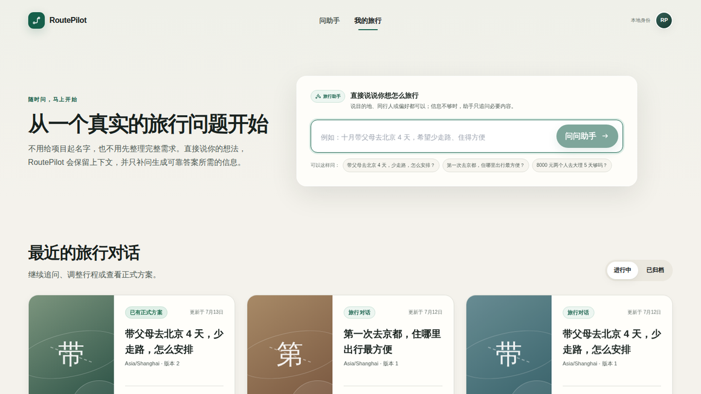
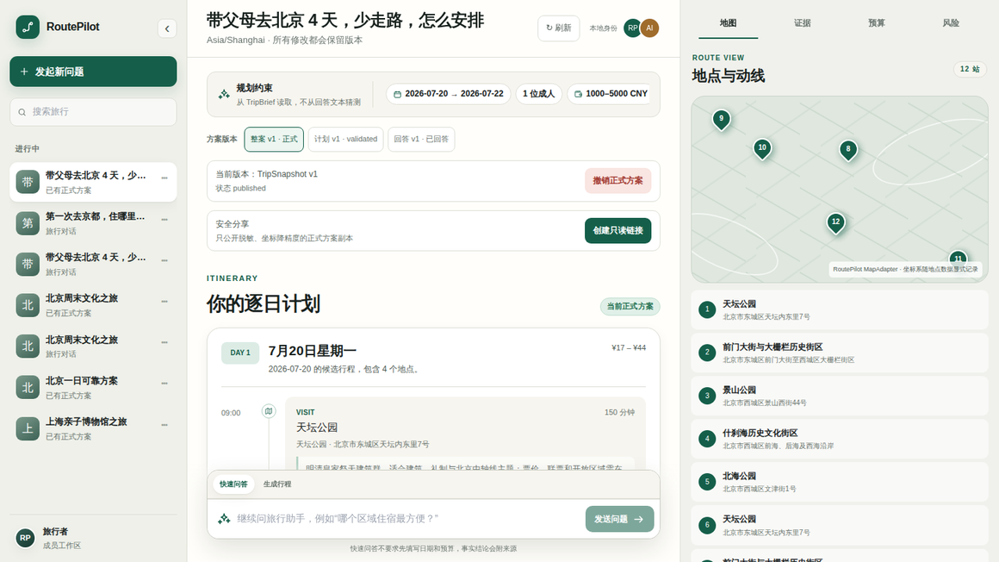
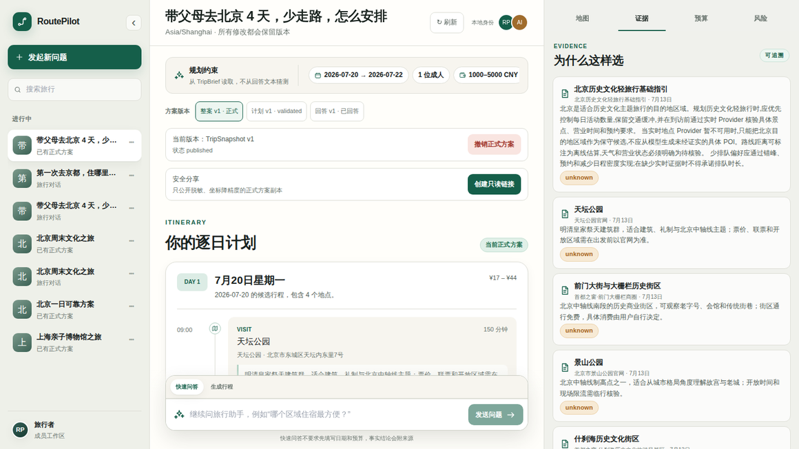

旅行问答和正式行程不是同一种结果
“住哪里方便”可以直接回答；“带父母去北京四天怎么安排”则需要日期、人数、预算、地点证据、交通、风险和逐日校验。RoutePilot 把快速问答与正式规划拆成两个命令，让轻问题保持轻量，让完整方案具备明确约束与可验证结构。
“住哪里方便”可以直接回答；“带父母去北京四天怎么安排”则需要日期、人数、预算、地点证据、交通、风险和逐日校验。RoutePilot 把快速问答与正式规划拆成两个命令，让轻问题保持轻量，让完整方案具备明确约束与可验证结构。
项目覆盖 Next.js / React / TypeScript 工作台与同源 BFF、FastAPI 控制面、A2A Agent 接口、PostgreSQL / PostGIS / pgvector、Redis Streams、RAG 与 Provider Gateway，以及契约、迁移、身份、分享和质量门禁。




普通问题先生成 TravelAnswer，不要求用户预先填写日期和预算；证据不足时保守回答或明确拒绝编造。
trip.ask 只发布回答，trip.plan 才进入完整规划链，避免一条轻问答意外覆盖当前正式行程。
Answering、Research、Planner、Validation 与 Semantic Verifier 通过版本化 Artifact 协作，各自承担明确职责。
问题、约束、证据、候选计划、校验报告和正式 TripSnapshot 分开保存，支持追溯、比较与恢复。
基于正式 TripSnapshot 调整行程，通过 CAS 与版本检查阻止过期执行覆盖用户的新修改。
RAG 保留来源、版本、许可、时效与信任信息；地点、路线、营业和天气统一经过 Provider Gateway。
PostgreSQL 是 Run、Task 与 Artifact 的真相源；Redis Streams 只负责投递，并配合租约、fencing 与跨进程取消。
正式方案通过短期 capability 分享，坐标降精度、字段白名单化，并支持即时轮换与撤销。
先判断是快速问答还是正式规划；完整规划把日期、人数、预算和偏好整理为 TripBrief。
Research Agent 从租户隔离的 RAG 与 Provider Gateway 获取带 provenance 的证据和实时事实。
Planner 生成候选行程，Validation 做确定性校验，Semantic Verifier 检查证据覆盖与语义风险。
通过校验的结果发布为正式 TripSnapshot，进入版本、重规划、公开事件和脱敏分享链路。
http://127.0.0.1:33003/ 工作台与同源 BFF 可访问。JSON Schema、Python 与 TypeScript 类型共同定义 Artifact、命令和公开事件边界。
Product Run、A2A Task 与 Artifact version 保持三个独立生命周期，可重放、可恢复、可取消。
OIDC Authorization Code + PKCE、同源 BFF 与脱敏事件边界共同保护浏览器会话和服务端凭据。
测试、类型、文档、Compose 环境、Alembic 离线 SQL 与安全不变量通过同一入口持续验证。